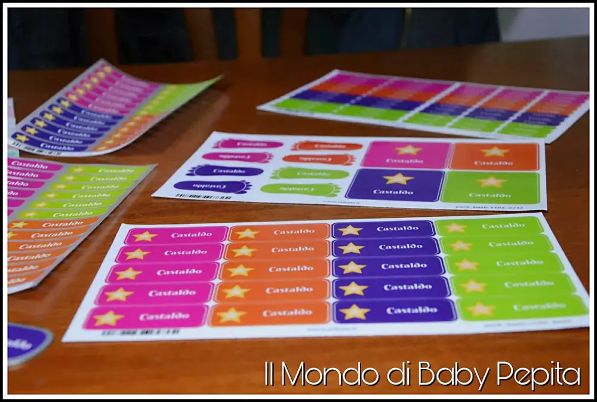
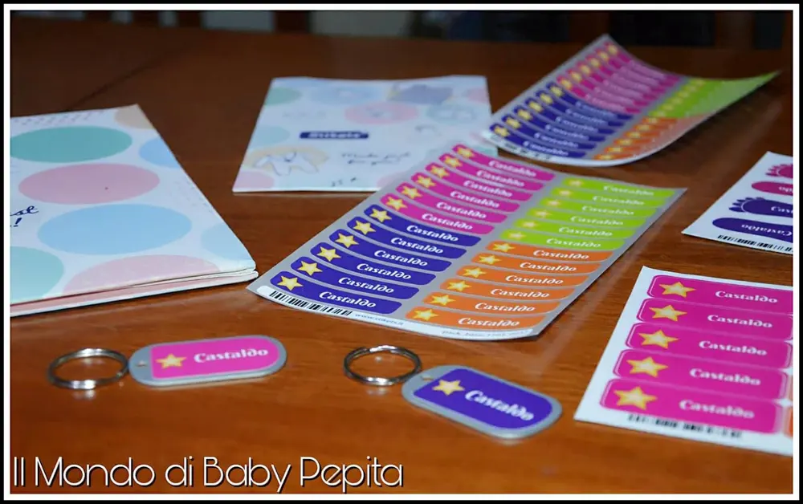
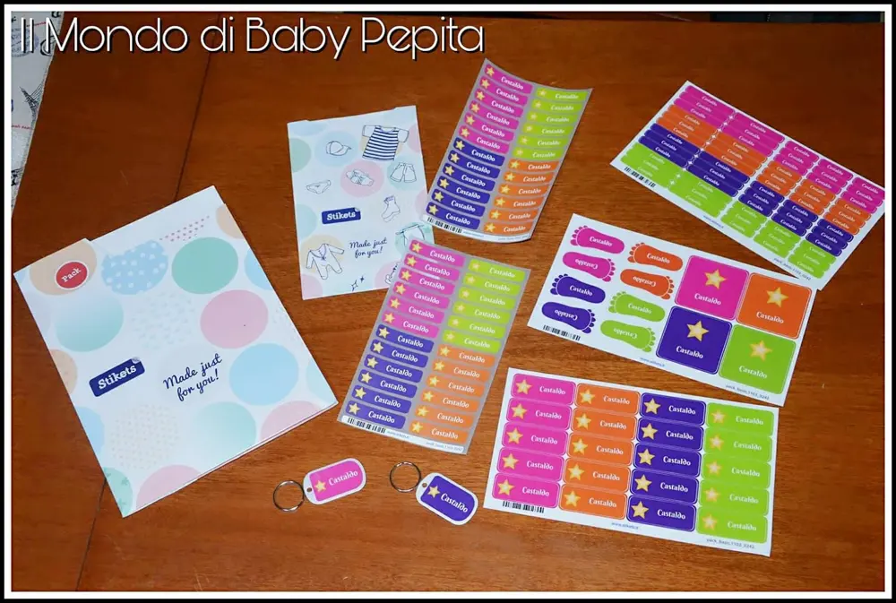
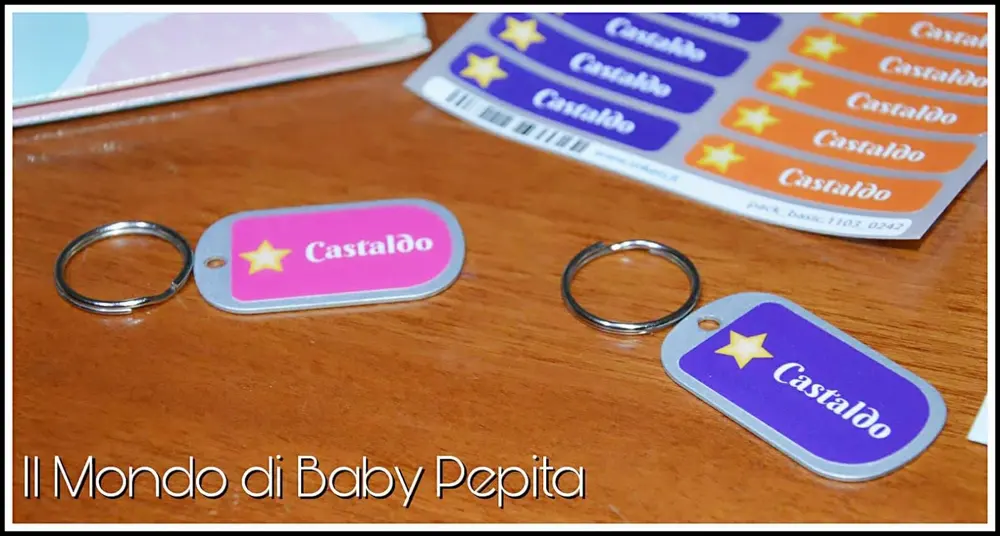
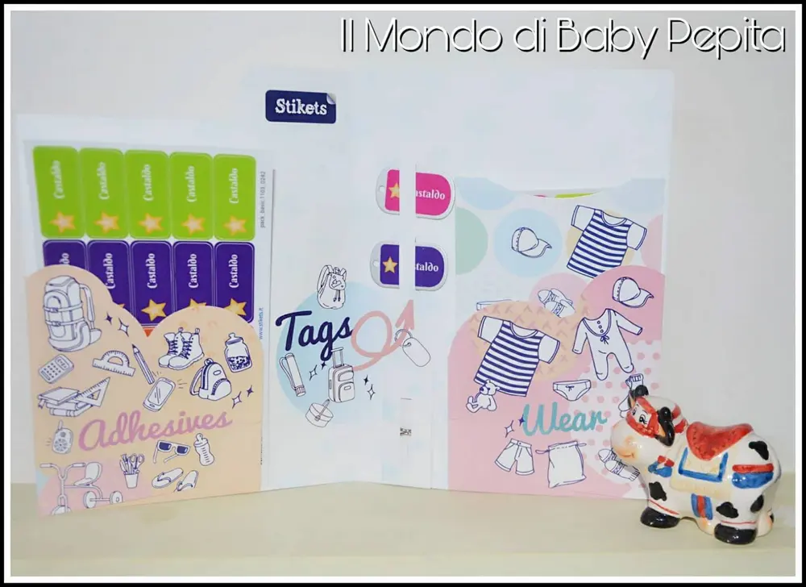

ADESIVI: STIKETS ITALIA
Adesivi, sì, oggi parliamo di quelli. Quante volte è capitato di perdere chiavi? E quante mamme si ritrovano con vestiti o scarpe, o quaderni e libri perduti dei propri figli? Magari accompagnate il vostro bambino a calcio o la vostra bambina a danza e quando torna a casa tutto in lavatrice ma.... ma poi ci si accorge di aver perso un pantaloncini o un body o qualsiasi altra cosa perché si sa, i bambini sono distratti. Possiamo fare tutte le raccomandazioni necessarie, ma sono pur sempre bambini che, tra tanti altri bambini nemmeno si ricordano che fare.

Come ho poi anticipato sopra, è capitato anche di perdere le chiavi purtroppo no?O ancora, quanti bambini fanno merenda o pranzano a scuola? Tutte le ciotole, posate, tovaglia in plastica si possono finalmente personalizzare.
Libri, quaderni e astucci. Possiamo finalmente personalizzare tutto ciò che ho elencato ed evitando gli episodi che ho raccontato.
Ma tutto fatto in modo carino e questa volta con la scelta anche di inserire un numero di telefono così da essere rintracciati in casi di perdite.
Insomma, STIKETS ITALIA ha pensato a tutto questo ed anche di più.
Da oggi è possibile dunque personalizzare etichette per vestiti, per scarpe, ci sono anche le etichette per bagagli (come vedete in foto), con STIKETS ITALIA è possibile oltre a questo, anche stampare le etichette per comunioni, battesimi, matrimoni e compleanni.

Questa sezione è molto indicata per chi è appassionato di fai da te, infatti potrete rendere le vostre bomboniere o pensierini ancora più belle, con l'aggiunta, volendo, anche della foto del vostro bambino.
Ancora un'altra cosa bellissima?
Con STIKETS ITALIA è possibile ordinare anche adesivi murali.
Questa soluzione trovo che sia ideale per le camerette dei bambini. Ci sono disegni davvero carini, impossibile non trovarne uno che fa per noi.
Quello che ho ricevuto io è un kit regalo.
Cosa contiene?
- 36 etichette mini adesive
- 24 etichette piccole adesive
- 48 etichette piccole per vestiti
- 20 etichette medie adesive
- 2 etichette medie per bagagli (o chiavi, borse, zaini, borsoni) compresi di targhetta e anello per utilizzare
- 4 etichette grandi adesive
- 8 etichette per scarpe a forma di piede (per 4 paia di scarpe)
Prezzo: 22,95€

Tutto il kit è possibile personalizzarlo con carattere della scrittura, colore, facoltativo, se inserire numero di telefono o un qualsiasi altro testo, icona accanto alla scrittura, anch'essa facoltativa.

L'ordine verrà preso in elaborazione dai 2-4 giorni e la consegna sarà fatta 24 ore dopo, dunque in 5 giorni le etichette saranno a casa vostra.
Voglio farvi notare in che modo arrivano tutte le etichette, in una cartellina ben separata.
La cosa più importante è che gli adesivi per i vestiti sono protetti da una carta velina, onde evitare brutte sorprese in quanto sono più delicate.

Ovviamente sul SITO ci sono anche altri pacchetti che costano un pochino in più ma con altri accessori aggiunti.
Io vi consiglio di dare un'occhiata al sito ma anche di provare con mano il prodotto.